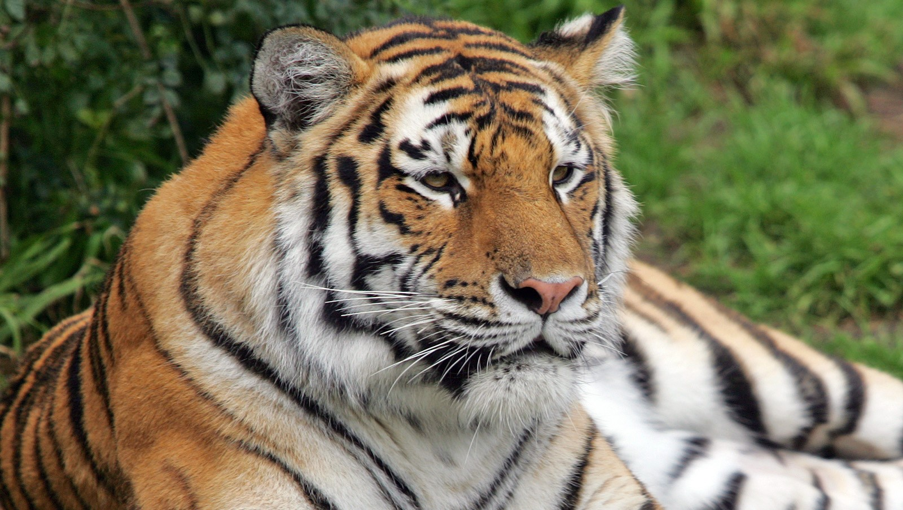
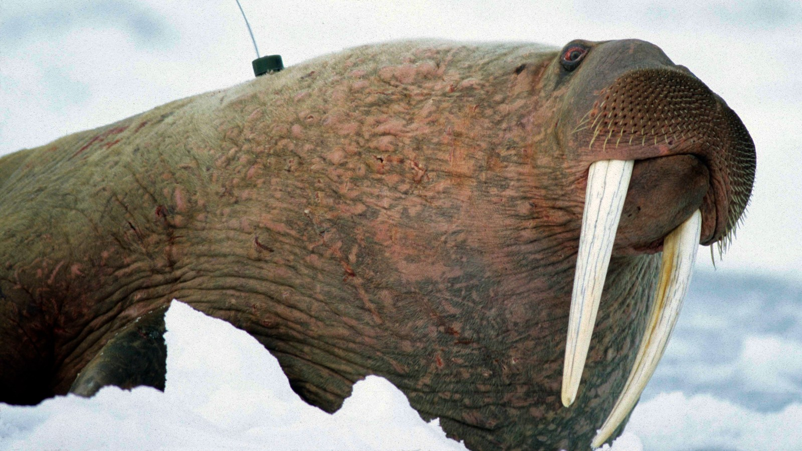
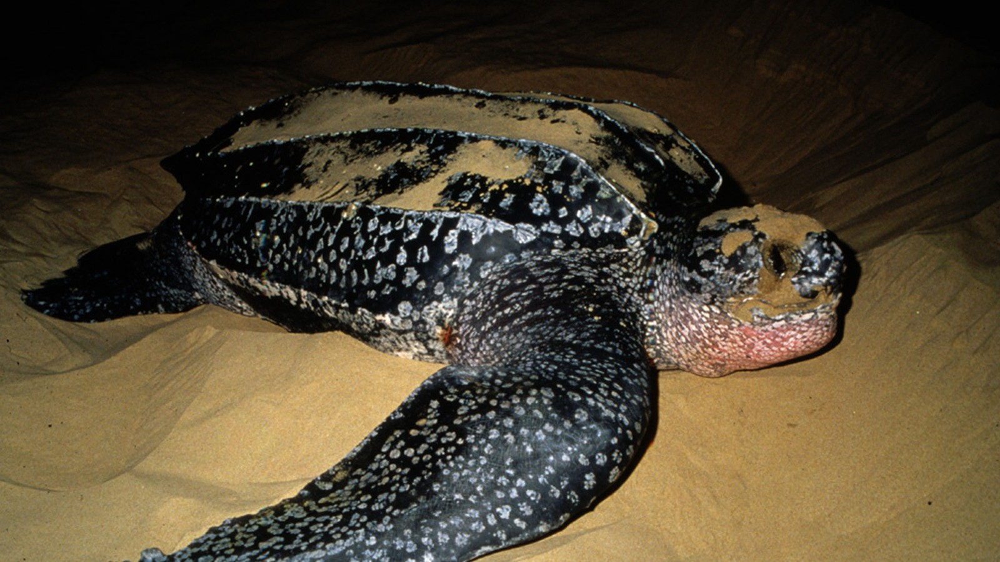

Utrydningstruede dyr
Her er 5 av de mest trudede dyreatrene i verden
1. Så lite som 3200 tigre lever utenfor fangenskap ifølge en ny studie. Avskoging og ulovlig jakt er blant truslene mot underartene av tigeren.

2. Isbjørner mister leveområder på grunn av issmelting i arktiske strøk, sier WWF. Majestetene er blitt symboler på klimaendringer.

3. I høst ble 200 døde stillehavshvalrosser funnet døde nordvest i Alaska. Arten som lever ved Beringstredet er truet av klimaendringer.

4. Magellanpingvinene trues av oljesøl og mangel på fisk i havet. I fjor strandet hundrevis av utslitte og døde pingviner på Rio de Janeiros strender.

5. Den største av de marine skilpaddene, havlærskillpadda, har overlevd flere hundre millioner år. Trues nå av fiske og klimaendringer.

Kilder til bildene:
NRK.no